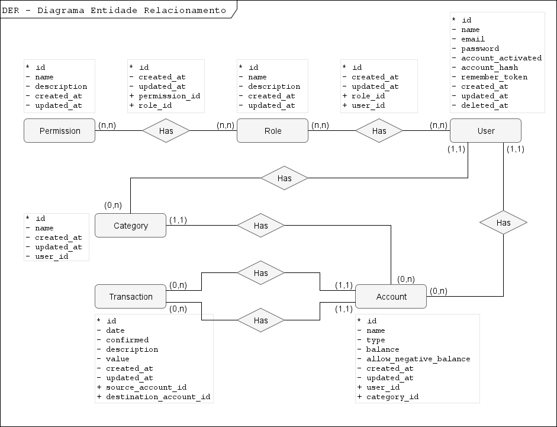
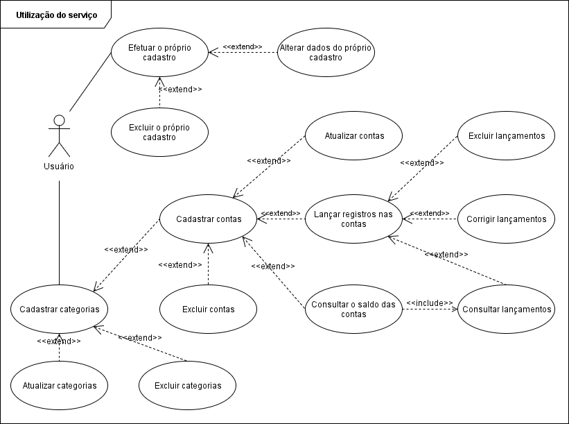

Modelagem¶
Atualizado em: 08/05/2018
Banco de dados¶
Modelo conceitual¶
Descreve todo o modelo de entidades utilizado para desenvolvimento da versão 1.0.0 da aplicação.

Modelo lógico¶
Descreve as tabelas do Banco de Dados da aplicação.
Permission (* id, name, description, created_at, updated_at)
Role (* id, name, description, created_at, updated_at)
Permission_Role (* id, created_at, updated_at, + permission_id, + role_id)
permission_id reference Permission
role_id reference Role
User (* id, name, email, password, account_activated, account_hash, remember_token, created_at, updated_at, deleted_at)
Role_User (* id, created_at, updated_at, + role_id, + user_id)
role_id reference Role
user_id reference User
Category (* id, category, created_at, updated_at, + user_id)
user_id reference User
Account (* id, account, type, balance, allow_negative_balance, created_at, updated_at, + user_id, + category_id)
user_id reference User
category_id reference Category
TrasactionLog (* id, date, confirmed, description, value, created_at, updated_at, +source_account_id, +destination_account_id)
source_account_id reference Account
destination_account_id reference Account
Caso de uso¶
Caso de uso - 1¶
Demonstra as funcionalidades disponibilizadas para os usuários do serviço oferecido pela aplicação.

Caso de uso - 2¶
Demonstra as funcionalidades disponibilizadas para os administradores de sistema que por ventura possam usar o serviço como negócio.